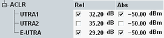

The adjacent channel leakage power ratio (ACLR) limits complement the spectrum emission mask. The limits can be set in the configuration dialog, depending on the channel bandwidth / the channel bandwidth combination.

The default values are identical for all bandwidths and for signals with and without carrier aggregation.
According to 3GPP, the relative limit must be evaluated only, if the measured adjacent channel power is greater than -50 dBm (absolute limit). In that case, the ACLR must be greater than the limits listed in the following table. The ACLR is defined as the mean power in the assigned E-UTRA channel divided by the mean power in an adjacent channel.
The ACLR must be evaluated for the first adjacent UTRA channel (UTRA1) and the first adjacent E-UTRA channel (E-UTRA). For channel bandwidths > 3 MHz, also the ACLR for the second adjacent UTRA channel (UTRA2) must be evaluated.
For carrier aggregation, the term "E-UTRA channel" refers to the aggregated bandwidth. Adjacent E-UTRA channels have the same bandwidth as the assigned E-UTRA channel.
The default settings are suitable to check the 3GPP requirements. The relative limits are only evaluated, if the corresponding absolute limit is exceeded. If you disable an absolute limit, the corresponding enabled relative limit is always evaluated.